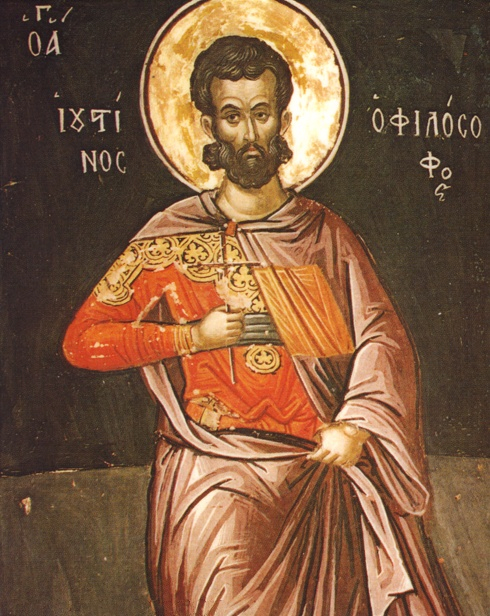
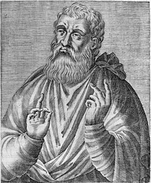
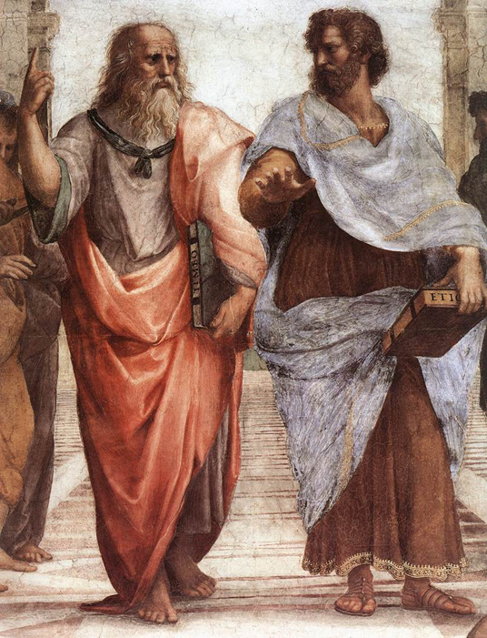

초기 기독교 변증가, 순교자, 신학자, 겸 철학자 순교자 유스티누스 (Justin Martyr Ἰουστῖνος ὁ Μάρτυς, AD 100-165)는 그리스 철학 전문가로써 기독교의 교리와 신앙 체계를 본격적으로 변증한 인물들 중 하나로, 기독교는 인류가 찾아온 모든 진리의 완성된 철학이라고 주장하였음

"우리는 그리스도께서 하느님의 맏아들이심을 배웠으며, 그분이 모든 인류가 참여한 말씀(로고스)이라고 위에서 말한 바 있습니다. 그러므로 이성을 따라 살았던 자들은, 비록 무신론자라 여겨졌을지라도, 실상은 그리스도인이었습니다. 예를 들면 그리스 철학자 소크라테스, 헤라클레이토스 같은 이들입니다. 또한 그리스도 이전에 살았던 사람들 중에서 로고스에 따라 살지 않은 자들은 은혜롭지 못한 그리스도의 원수들이며, 로고스를 따르는 이들을 박해하고 죽였던 자들입니다. 그러나 로고스에 따라 살았던 자들, 그리고 지금도 그렇게 사는 자들은 두려움 없고 동요함 없는 그리스도인입니다."
“모든 사람들 가운데서 옳게 말해진 것은 무엇이든 우리 그리스도인의 소유입니다. 왜냐하면 우리는 하느님 다음으로, 태어나지 않으시고 말로 다 할 수 없는 하느님에게서 나온 ‘말씀’(로고스)을 경배하고 사랑하기 때문입니다. … 모든 작가들은 그들 안에 심겨진 로고스의 씨앗을 통해 그것과 관련된 진리들을 볼 수 있었던 것입니다.”
-제1변증서
“내가 ‘각 사람은 자기 자신의 의로 말미암아 구원을 받을 것이다’라고 인용했을 때, 모세의 율법에 따라 자신의 삶을 규율한 자들 또한 마찬가지로 구원을 받을 것이라고도 말했습니다. … 보편적이며 자연스럽고 영원히 선한 것을 행한 자들은 하나님께 기쁨이 되므로, 이들은 그리스도를 통해 부활 때에 구원을 받을 것이며, 그들은 노아, 에녹, 야곱, 그리고 그 밖의 의로운 사람들 — 곧 이 그리스도를 알았던 자들과 함께 — 과도 동등하게 구원을 받게 될 것입니다.”
- 트리포와의 대화

"로고스"(말씀, 진리로 번역됨)에 의해 살아가는 사람들은 기독교나 심지어 신을 믿지 않았더라도 사실상 기독교인이나 다름없으니 구원 가능하다고 주장. 소크라테스 같은 그리스 철학자들을 예시로 듬.
(태클걸까봐 그러는데 당연하지만 기독교인이 될 필요가 없다고 주장한 것은 절대 아님. 애초에 로마 신들에게 경배 거부했다가 목잘린 사람임)
교회마다 다른데 십일조는 기독교 의무사항이라고 가스라이팅하는 교회가 많을껄?